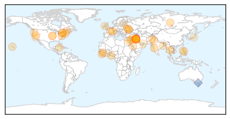

Unknown
30-Day Web Trend
0 alerts, 0 warnings

30-Day Twitter Trend
6 alerts, 1 warnings
Article Locations
Article Confidences
Top Articles:
- 0.972
- Why CNY is America's ground zero for EEE; 5 things to know about deadly virus
- 0.964
- “Possibility of Ebola spreading to India is low”
- 0.917
- Chicago Tribune
- 0.910
- The world windows to Thailand
- 0.866
- W.African Ebola outbreak death toll reaches 1,013
- 0.866
- Obama speaks to Ukraine's Poroshenko, White House says
- 0.866
- Putin tells EU's Barroso Russia coordinating aid convoy to Ukraine
- 0.866
- New PM Abadi calls on Iraqis to unite against raging Sunni insurgency
- 0.866
- Ukraine rebel leader says mulls counter attack
- 0.866
- Ukraine government loses 568 forces in rebel fighting
- 0.866
- Islamic State defeats Kurds in town of Jalawla northeast of Baghdad
- 0.866
- Shell hits prison in Ukraine's Donetsk, one inmate killed -city council
- 0.866
- Riot erupts over police shooting of unarmed black teen in Missouri
- 0.866
- Pro-Maliki Shi'ite militias step up Baghdad patrols after his speech
- 0.866
- Obama to make statement on Iraq -White House
- 0.854
- Another Nigerian nurse tests positive for Ebola
- 0.790
- UNICEF-Sierra Leone Ebola Virus Disease Weekly update (3-10 August 2014) - Sierra Leone
- 0.756
- Health scare in dialysis unit
- 0.755
- KRNV, Reno, NV
- 0.755
- KRNV, Reno, NV
- 0.752
- Polio cases in Peshawar, Punjab linked to Karachi
- 0.741
- MERS Outbreak Shows Weakness of Saudi Arabia’s Public Health System
- 0.702
- Health, science links in disaster readiness
- 0.698
- Emergency Supplies Reaching Health Facilities in Philippines - Philippines
- 0.669
- Bengal districts have no entomologists
- 0.661
- Wildlife officials airdrop oral rabies vaccine in Aroostook County through Aug. 18 — Aroostook — Bangor Daily News — BDN Maine
- 0.658
- Polio Vaccination Efforts Begin in Conflict-Torn Iraq
- 0.630
- Fighting polio in 2014: Pakistan fares worse than most impoverished nations
- 0.629
- NI health minister sees 'merit' in A&E fees for drunk patients
- 0.627
- Onondaga County resident diagnosed with potentially deadly EEE virus
- 0.584
- Alberta sees increase in cases of drug-resistant tuberculosis, report finds
- 0.549
- FBI probes death of unarmed black teen killed by Missouri police
- 0.549
- Actor Robin Williams found dead in apparent suicide
- 0.549
- Video: Easing the trauma for Gaza’s children
- 0.549
- Paris urges lovers to swap ‘love locks’ for 'selfies'
- 0.549
- More than 100 escape after shelling of Donetsk prison
- 0.549
- Pressure mounts on Iraq's Maliki amid political turmoil
- 0.549
- Israeli negotiators arrive in Cairo as Gaza truce holds
- 0.549
- Maliki defiant as Iraqi president names new PM
- 0.549
- French military effort against ISIS ‘should focus on Lebanon’
- 0.549
- Founder of Paris’s iconic Berthillon ice-cream shop dies
- 0.549
- Clinton blames Obama’s Syria policy for rise of ISIS
- 0.549
- Barroso warns Russia over aid mission to east Ukraine
- 0.544
- UAE hospitals urged to curb post-surgery infections
- 0.544
- Tick Bite May Cause Meat Allergy
- 0.504
- New case of African swine fever appears in Poland farms - Livestock - Agri.eu
Top Tweets:
- 0.840
- RT: >20,000 lab confirmed flu cases; Australia is in flu season and vaccination now can protect you soon! fluishere http://t.c…
- 0.571
- RT: @fluspecialist talks flu & how you can protect yourself, your kids & colleagues from this wintry respiratory virus https://t…
- 0.554
- RT: A person can incubate the virus without symptoms for 2-21 days, the average being 5-8 days before becoming ill…
- 0.554
- RT: "A person can incubate the virus without symptoms for 2-21 days, the average being 5-8 days before becoming ill…
- 0.529
- RT: "@taiwooloko: @owenmp The trainings in BSL-4 are absolutely neccesary for us to contain this outbreak." Eb…
Ebola
30-Day Web Trend
19 alerts, 0 warnings

30-Day Twitter Trend
11 alerts, 0 warnings
Article Locations
Article Confidences
Top Articles:
- 1.000
- East African nations on high alert for Ebola
- 1.000
- International emergency declared in Ebola outbreak
- 1.000
- Another Ebola Victim Surfaces, as Does Potential Patient Zero
- 1.000
- Nigeria Confirms 10 Ebola Cases
- 1.000
- International cooperation crucial to block spread of fatal Ebola virus
- 1.000
- A look at what is scary about Ebola and reasons not to fear it
- 1.000
- Reasons not to fear Ebola virus
- 1.000
- Ebola Vaccine Trials Set to Begin in September
- 1.000
- What's scary about Ebola, reasons not to fear it
- 1.000
- Nurse Is Nigeria's 10th Case of Ebola
- 1.000
- Nigeria Confirms 10 Ebola Cases
- 1.000
- WHO declares Ebola epidemic a global emergency
- 1.000
- WHO declares Ebola epidemic a global emergency
- 1.000
- Ebola’s New Status As WHO Declares It A Global Emergency
- 1.000
- What's so scary about Ebola?
- 1.000
- Tracing Ebola's Breakout to an African 2-Year-Old
- 1.000
- Nurse Is Nigeria's 10th Case of Ebola
- 1.000
- 'Vaccine for Ebola to trial next month may be ready by 2015'
- 1.000
- Nurse Is Nigeria's 10th Case of Ebola
- 1.000
- Nurse Is Nigeria's 10th Case of Ebola
- 1.000
- President apologises to Liberia's health workers
- 1.000
- Nigeria's Lagos now has 10 Ebola cases
- 1.000
- Gulf Daily News Local News Bahrain steps up Ebola screening
- 1.000
- Ebola Grips West Africa
- 1.000
- What's scary about Ebola, reasons not to fear it
- 1.000
- Battle to contain Ebola intensifies, Nigeria seeking volunteers
- 1.000
- Guinea shuts borders with Sierra Leone, Liberia in bid to halt Ebola
- 1.000
- Nurse Is Nigeria's 10th Case of Ebola
- 1.000
- Nigeria Confirms 10 Ebola Cases
- 1.000
- Liberian doctors to get experimental Ebola drug
- 1.000
- Liberian doctors to get experimental Ebola drug
- 1.000
- Liberian doctors to get experimental Ebola drug
- 1.000
- Ebola vaccine could be 'rushed through to be ready by 2015'
- 1.000
- The most from the coast
- 1.000
- Ghana, Business Advice, Jobs, News, Business Directory, Real Estate, Finance, Forms, Auto
- 1.000
- Nigeria Confirms 10 Ebola Cases
- 1.000
- Nigeria bars Gambia’s national airline over its Ebola measures
- 1.000
- Nigeria confirms new case
- 1.000
- ‘Ebola vaccine could be rushed through for 2015’
- 1.000
- What’s scary about Ebola; reasons not to fear it
- 1.000
- Ebola may be scary, but most shouldn't be afraid
- 1.000
- Nurses, doctors protect yourself against Ebola!
- 1.000
- Key Facts on the Ebola virus disease
- 1.000
- West Africa feels knock-on effects of battle against Ebola - Nigeria confirms new Ebola case in Lagos - Kuwait Times
- 1.000
- Ebola may be scary, but most shouldn't be afraid - MyNorthwest
- 1.000
- Spanish Ebola patient gets experimental drug
- 1.000
- Vietnam may send suspected samples to the US for Ebola testing
- 1.000
- Moldova Enhances Border Control to Protect from Ebola Virus
- 1.000
- Death toll from Ebola virus disease exceeds 1,000 in West Africa
- 1.000
- Experimental Ebola drug on its way to Liberia
Showing top 50 articles...
Top Tweets:
- 0.977
- RT: @Mz_cutielicious Because Ebola is overall so rare, most "suspected cases" detected at airpot won't be Ebola.…
- 0.952
- RT: Nigeria's health minister has confirmed ten cases of the Ebola virus in Lagos - all had come into contact with the Liberi…
- 0.942
- RT: "@ebiokon: @EbolaAlert EbolaChat Ebola who should get tested for Ebola? Where?"
- 0.914
- RT: @EbolaAlert can one contact Ebola through money handled by a person with the virus? EbolaChat
- 0.905
- RT: @EbolaAlert can someone who has recovered from being sick with the Ebola virus be reinfected by it? ebolachat
- 0.893
- RT: @EbolaAlert Is the ZMAPP a vaccine or drug for curing the Ebola? EbolaChat
- 0.893
- RT: "@IbnIdrees14: @ikeanya is the ZMAPP a vaccine or drug for curing the Ebola EbolaChat
- 0.822
- RT: @EbolaAlert is Guinea Pig among the transmitters of the Ebola? ebolachat
- 0.814
- RT: Please treat everyone as suspect to avoid the spread of Ebola EbolaChat
- 0.810
- RT: Virus Ebola: immagini dalla campagna di prevenzione in Sierra Leone https://t.co/kb4ZvOrbL9 via http://t.co/T…
- 0.782
- RT: "@biskits_n_gravy: @SatishKTM Ebola is considered a BSL-4 pathogen because no vaccine exists (yet) and causes high morbidit…
- 0.760
- RT: We shall be taking questions surrounding the myths and facts around Ebola virus disease in 5 minutes. EbolaChat
- 0.749
- RT: @ibrodoc_03 Sitrep more complex in Africa b/c many VHFs besides Ebola?…
- 0.723
- RT: Scientist from at Forefront in Developing Vaccine for Ebola Virus >> http://t.co/uUyHdUyhcC
- 0.719
- RT: DO NOT bathe in salt water or drink it to prevent ebola! That is very dangerous especially if you are hypertensive! ebolac…
- 0.710
- RT: @EbolaAlert Swines can naturally carry and transmit Ebola Reston which does not cause disease in humans.
- 0.672
- Hearing on Ebola Virus Full coverage with Follow for updates http://t.co/i1ZIfQWh1u
- 0.670
- RT: How have the neighbors of the 4 West African countries kept Ebola away or r they just not reported yet? Ebolachat…
- 0.647
- RT: "@biskits_n_gravy: @_RyanMUFC92 Because Ebola can have a long incubation period, theoretically someone infected could…
- 0.628
- RT: EDITORIAL NYT world unprepared for Controlling the Ebola Epidemic http://t.co/WHfTmJKJid
- 0.624
- RT: @EbolaAlert can survivors of ebola,be infected again? ebolafacts
- 0.623
- RT: @EbolaAlert why are Countries calling 4 ban on flights from west African countries with the virus if it cant spread vi…
- 0.614
- RT: Ebola deaths top 1000, @WHO says. Latest update lists 1848 cases, 1013 deaths. http://t.co/CA5KradATz
- 0.614
- RT: Ebola a huge risk in W. Africa. I share what CDC is doing to stop the outbreak where it starts in piece: htt…
- 0.601
- RT: Get the facts about Ebola. A patient must be sick & have symptoms to spread the disease to others. http://t.co/v0DgY4f1tw
- 0.591
- RT: "@WHO: @biskits_n_gravy Ppl shld not travel if they hv had contact w/someone who had Ebola symptoms in the previous 21d" …
- 0.588
- RT: Good question "@tweeenz: @EbolaAlert can survivors of ebola,be infected again? ebolafacts"
- 0.583
- RT: Please check out our PSA for the West African region! Watch and share! Ebola https://t.co/3dsizIs0xb htt…
- 0.557
- RT: Undercooked infected bat and primate (bush) meat transmits the virus to humans EbolaChat
- 0.553
- RT: Salt and water & kolanut DO NOT prevent or cure ebola! Prevention by Handwashing with soap helps ebolachat
- 0.553
- RT: @tweeenz well for this strain of ebola, no proof of any kind concerning immunity has been established.
- 0.535
- RT: "@WHO: @biskits_n_gravy Ppl who hv Ebola symptoms must be isolated and certainly should not travel or go out in public" …
- 0.529
- President Koroma makes second visit to Ebola Emergency Operations Centre in Sierra Leone Follow update http://t.co/va9QKSHqLH
- 0.525
- RT: "@WHO: @ikeanya As far as we know there is no such case Ebola"…
- 0.515
- RT: For the Togolese in the house, those were rumors: Les autorités nient la découverte de cas suspects d’Ebola au Togo…
- 0.503
- RT: The salt & water myth may have killed more people than Ebola! Call and educate your relatives & friends not 2 do it ebol…